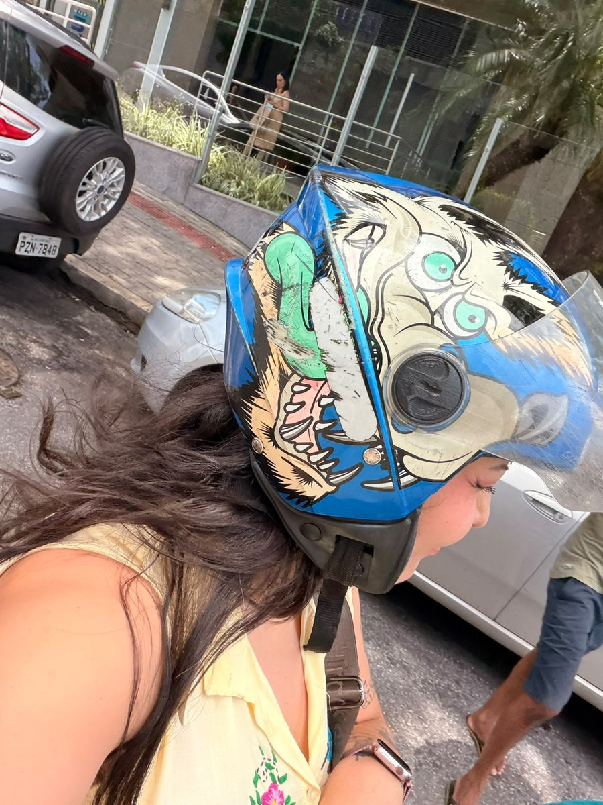

Emagrecimento
Acompanhamento para perda de peso com avaliação individual, com plano de tratamento definido junto com você.
Médica · Atendimento online
Dra. Maria Luiza Valli
Médica · CRM-MG 95323
Consulta sem pressa, olhando para você por inteiro: corpo, mente e rotina.
Diagnóstico, receita, exame e laudo na mesma consulta, sempre que possível.
Atendimento 100% online para pacientes de todo o Brasil.

a caminho da sua saúde 🏍Quem sou eu
Médica (CRM-MG 95323), atende online pacientes de todo o Brasil. Na consulta, ela olha para o paciente por inteiro, cuida do que pode ser resolvido ali e encaminha ao especialista quando é preciso.
Da ansiedade ao emagrecimento, do laudo ao check-up: atendimento sério, linguagem simples e disposição para ir até onde for preciso. Até de mototaxi.
100%
Online
7
Áreas de cuidado
Digital
Receitas e laudos
BR
Todo o Brasil
Uma médica, muitas frentes. Se você não sabe a quem procurar, comece por aqui.
Acompanhamento para perda de peso com avaliação individual, com plano de tratamento definido junto com você.
Tratamento de depressão, ansiedade e TDAH, com acompanhamento contínuo e prescrição quando houver indicação médica.
Acompanhamento de adultos com TDAH e ansiedade, com escuta sem julgamento, tratamento ajustado à sua rotina e encaminhamento para avaliação especializada quando necessário.
Laudos médicos, relatórios e atestados emitidos com validade digital.
Avaliações ocupacionais e orientações para a saúde do trabalhador.
Avaliação da queda de cabelo e tratamento clínico personalizado.
Check-up, exames, pressão, diabetes, colesterol, prevenção cardiovascular e aquele problema que ninguém sabe a quem levar.
Conte rapidinho o que está acontecendo.
Escolha o melhor momento, sem sair de casa.
Atendimento completo, com calma e atenção.
Prescrições, pedidos de exame e laudos com assinatura digital.
Sim. A telemedicina é regulamentada no Brasil, e receitas, atestados e pedidos de exame são emitidos com assinatura digital válida em farmácias e laboratórios.
Sim, quando houver indicação médica após a avaliação, incluindo receitas de controle especial conforme a legislação.
Sim. A consulta é feita no seu ritmo, com linguagem direta e sem pressa. Se for preciso investigar um diagnóstico, você recebe orientação e encaminhamento para a avaliação especializada.
Sim, o atendimento é 100% online para pacientes de qualquer lugar do país.
Dor no peito, falta de ar ou sinais de infarto e AVC exigem atendimento presencial imediato: ligue 192 (SAMU) ou vá ao pronto-socorro mais próximo.
Mande uma mensagem e agende sua consulta online com a Dra. Maria Luiza Valli.